flowchart LR
A(R markdown / Quarto\ndocument\nwith R code) -->|knitr| B(Markdown\nwith R code output)
B --> C[LaTeX]
C --> CC[PDF]
B --> D[Word]
B --> E[HTML]
B --> F[Presentation]
B --> G[Book]
5 R markdown, basic statistics and visualizations
5.1 Aims for today
- working R markdown / Quarto
- basic visualisations with R and
ggplot2 - simple statistics with R
- final example: principal component analysis
5.2 R markdown
5.2.1 What is R markdown?
R markdown is a remarkably simple to use and yet powerful tool. The basic idea is as follows: you write a document in a simple text format – for example, a manuscript, a report, or even a thesis. In that document, you include R “code chunks”. These code chunks are executed by R, and the output is included in the document – including figures, numbers or tables. And then, from this single simple text document you can create a PDF, a Word document, an HTML page (or a whole website!), a book, a slide presentation and much, much more.
In fact, this book you are reading now has been entirely written in R markdown1. You can go to the github repository for this book and see the R markdown/Quarto files that generated it – for example, here is the page you are reading right now. It is also possible to create a scientific paper completely in R markdown (here is an example of such a paper: Weiner 3rd, Obermayer, and Beule (2022)).
1 Actually, in its successor called “Quarto”.
Why is this so great?
- Reproducibility: It allows you to keep the methods, analysis itself and the analysis results in one place.
- Avoiding errors: Whenever you re-run your analysis, R automatically updates all your figures, tables, results, etc. in your document. This prevents you from forgetting to update a figure or a number in your manuscript.
- Flexibility: You can easily change the output format of your document; you can update your figures or your tables easily without having to resort to manual editing.
- Bibliography. As you have seen in this book, it is not hard to include bibliography in your document, in any style you desire. You can use a free package manager such as Zotero or Mendeley to manage your bibliography, and produce the bibliography in the format that R markdown uses.
- Focus on content. The minimal formatting required in R markdown allows you to focus on the content of your document, not on the formatting.
What are the disadvantages?
- Steeper learning curve. You have to learn all the stuff first. Luckily, when it comes to R markdown, it is quite easy and there are plenty of resources, and after today you will know all the most important stuff.
- No fine control over the layout. While you can easily use simple formatting commands, you will have to resort to more complex tools to control things like font size of the chapter headers2. Many people consider it to be a good thing – this is the boring part that the computers should take care of, you shouldn’t worry about formatting but about your text, but sometimes it is annoying. However, you can always generate a Word file with R markdown that uses a Word template, and then fine tune it in Word.
- Collaboration. Collaborating with markdown is not as easy as with a Word document, because most people can’t use markdown. Often that means that you need to communicate with your co-authors using Word, and then patiently type in their changes into your markdown document.
2 Actually, you can control the format for PDF and HTML output very precisely, but then you have to learn LaTeX and CSS, respectively. For Word, the only option is to use a Word file with pre-defined styles as a template.
R markdown vs Quarto
- R markdown is older and more widely supported
- Quarto is newer, slightly more complex, with additional features and generally better looking
Documents created in Quarto can largely be processed with R markdown and vice versa, only some visual bells & whistles might be lacking.
Both Quarto and R markdown are available if you have installed RStudio. Standalone R installations without RStudio may require additional packages (e.g. rmarkdown for R markdown) or programs (quarto for Quarto).
5.2.2 Markdown basics
The “R” in R markdown stands for “R”, the programming language, combined with markdown. But what is markdown?
Markdown is a very lightweight formatting system, much like what many of us are using in emails or messengers, stressing words by surrounding them with stars etc., but with a few extra features. The idea is that you can write the text in a very simple way and it remains readable even with the formatting marks (take a look!).
Basic markdown formatting
| Code | Output |
|---|---|
**bold** |
bold |
*italic* |
italic |
3^2^ |
32 |
log~2~ |
log2 |
`code` |
code |
[link to website](https://cubi.bihealth.org) |
link to website |
Here is another feature: lists.
Lists in markdown
Code:
- item 1
- item 2
- subitem 1
- subitem 2
- item 3Result:
- item 1
- item 2
- subitem 1
- subitem 2
- item 3
There is much more to it (look up for example markdown guide from Rstudio or the Quarto markdown documentation), but you don’t need it right now. Just keep in mind that you can always take a look at the markdown source of this document to see how things can be done.
Mathematical formulas
Using a special syntax, it is possible to include virtually any mathematical formula in R, both inline variant (like \(\sigma=\sqrt{\frac{(x_i-\bar{x})^2}{n}}\)) or as a stand-alone block:
\[\sigma=\sqrt{\frac{(x_i-\bar{x})^2}{n}}\]
When you convert the R markdown document to Word, you will even be able to edit the formulas natively in Word.
There are several formulas in this book, if you are interested, look up the book quarto sources on github or check this guide.
5.2.3 R markdown header
You might have noticed that at the top of the first R markdown file you created there is a block of text that might look something like this:
---
title: "Untitled"
author: "JW"
date: "`r Sys.Date()`"
output: html_document
---This is a block with meta-information about your document. For example, it specifies the title, author and date. Note that date is updated automatically every time the document is rendered by executing the r command Sys.Date() (you will learn about the inline chunks in a moment). Naturally, you can run the command in your console or script.
`Sys.Date()´
Sys.Date()[1] "2024-10-14"The output: specifies the type of output you would like to have.
5.2.4 R code chunks
In between the markdown text, you can include R code chunks. These are executed consicutively by R and the output is included in the document. Every single fragment of code in this book is a code chunk.
Each chunk starts with a ```{r} and ends with a ``` (these should be placed on separate lines). You can also add the chunks by clicking on the little green plus sign in the Rstudio toolbar and choosing “R chunk”. Here is an example of a code chunk:
R chunks
R markdown:
```{r}
x <- 1:10
print(x)
plot(x)
```Output:
x <- 1:10
print(x) [1] 1 2 3 4 5 6 7 8 9 10plot(x)
By default, the code itself is also shown in the document. You can configure this by clicking on the little cogwheel ⚙ icon to the right of the chunk start. You will notice that configuring the options means essentially adding stuff like echo=FALSE to the chunk start (echo=FALSE means that the code itself is not shown in the document).
echo=FALSER markdown:
```{r echo=FALSE}
x <- 1:10
print(x)
plot(x)
```Output:
[1] 1 2 3 4 5 6 7 8 9 10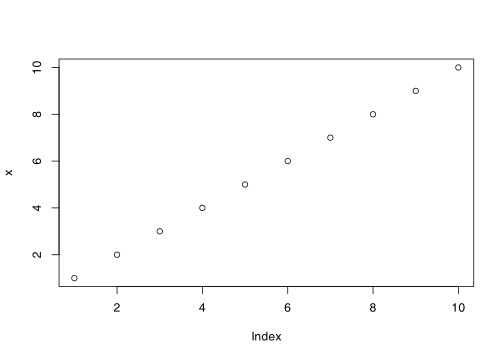
Code chunks run in one environment
Code chunks share their environment. That is, if you define a variable in one chunk, you will be able to use it in the subsequent chunks.
Think of all the chunks as consecutive fragments of your script file!
The code chunks can also be inline, that is, you can put directly a code chunk in your sentence. For example, when I write that the \(\pi\) constant is equal to 3.1415927, I am using an inline code chunk:
For example, when I write that the $\pi$ constant is
equal to `r pi`, I am using an inline code chunk:The point is not to save typing. The point is to update your document whenever you update your analysis. For example, if you add samples to your data and re-run the analysis, the number of samples that you have written in your method section must reflect the change. If you use an inline code chunk, it will do so automatically, without you needing to painstakingly update each number, each figure, each result in your manuscript.
5.3 Visualizations with R
5.3.1 Basic principles of visualization
Before we launch into creating our own plots, let me give you a few tips about visualizations in general.
Each plot is a way of communicating with your reader. You want to tell them something with that plot. Therefore, before you code anything, think what you want to tell the reader with the plot. What is the message, what is the story? How to best get your point across? What is that point?
This is really helpful, because we (and I do mean we all) have the tendency to want to document, to “show our data”: show everything that we got, all the results, all the measurements, all the experiments. Very often this results in cluttered, unreadable plots that do not really communicate anything apart from your prowess in R. While this may (or may not) be needed for things like supplementary data, usually it is not very effective.
The next step is to think how to communicate the message. Again, we all have a knee-jerk reflex to use the plots that we know how to do. This is why I would like to urge you to first take a piece of paper and a pencil and sketch a plot that you think would best communicate your message. Don’t worry about the details or how to implement it, just think how you would like it to look.
In addition, you can always look at how other people have visualized similar data and get inspired. Not to copy, but to see which way of visualizing is convincing for you, which plots are clear and fantastically communicative, and which are hard to read and to understand.
Finally, when creating the plot, think about accessibility. Thus, ask yourself. Are your fonts and symbols large enough to be read by a person with normal vision even if the plot is scaled down to fit a multi-panel illustration? Are the colors color-blind friendly3?
3 Around 5%-8% of all males and 0.5%-1% of all femals are color-blind. When I was a young post-doc I created an interface to single-nucleotide polymorphism data in a sequencing project. I showed synonymous mutations with green arrows and non-synonymous mutations with red arrows. Very proud, I presented it to the twenty or so members of the consortium. One of them stood up and said: “I am color-blind. I can’t see shit on your plot”.
Visualization principles
- Message: think what the message of your plot is
- Design: make a sketch on how to best communicate the message
- Inspiration: look at other people’s plots for inspiration
- Simplicity: less is more
- Accessibility: make your fonts large and colors color-blind friendly
5.3.2 Base R vs ggplot2
We already had simple examples of plots in R (for example on day one, in the Water Lily example - Section 1.6.1). We even had a look at the ggplot2 package on Day 3 (Section 3.5.5). Why are there so many plotting systems in R?
Actully, the situation is even more complex than you might imagine. Partly that is because there are so many different types of plots that it is hard to make a single system that would be good for all of them. Partly because when R was first created, many modern graphical formats and features did not exist yet. But the main problem, as usual, is that anybody can write their own. And so they did.
Fortunately for us, the two graphic systems – base R and ggplot2 – are sufficient even for the most sophisticated plots. It is useful to know them both, however. Base R is simple and allows very quick plotting of simple tasks. Moreover, many base R statistical functions have built-in plotting capabilities (e.g. you can simply call plot(model) for a linear regression model to get all relevant plots). ggplot2, on the other hand, is more complex, but it is also working on a much higher level and takes care of many things automatically.
Here is a table comparing the basic features of the two systems.
| Base R | ggplot2 |
|---|---|
| Simple to use for simple task, gets very complex for complex tasks | More complex, but more powerful and makes complex tasks easier |
| Many packages | Many packages |
| Plots need many lines to be customized | Plots are customized in one line |
| Low-level, with absolute feature control | High-level, with automatic feature control |
Most of what can be done with ggplot2 can be done with base R, but it often requires many more lines of code. On the other hand, it is easier to develop a de novo approach with base R, because programming new features in ggplot is not for the faint of heart.
Let us plot a simple scatter plot with both systems and show how customization will look like in both. We will use the iris data set4.
4 Not the doctored version we have been loading in the previous days, but the built-in original data set. If you have created an iris variable in your environment, type rm(iris) to remove it.
Base R:
colors_map <- c(setosa="red", versicolor="green", virginica="blue")
colors <- colors_map[iris$Species]
plot(iris$Sepal.Length, iris$Sepal.Width,
col=colors, pch=19, xlab="Sepal length",
cex=1.5,
ylab="Sepal width", main="The iris data set")
abline(-2.8, 1.1, col="red")
legend("topright", legend=unique(iris$Species),
col=colors_map[unique(iris$Species)], pch=19)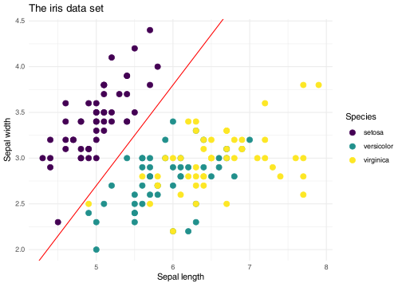
Note that in the code above the col= parameter simply takes a vector describing colors. Color management must be done by the user – you cannot simply say “choose the viridis palette” (or similar). You also need to remember some weird things, like that the pch=19 means “filled circles” (in contrast, pch=1 means “empty circles”, and if you need triangles, you have to use pch=2)5. And cex is the size of the points.
5 For many years I had a piece of paper hanging over my desk with all the pch values written on it and symbols scrawled with pencil next to them.
Legend drawing is a completely separate function that slaps the legend on top of the existing plot, whatever it is. The abline() function draws a line on the plot, also not really caring what was drawn before.
Ggplot2:
library(ggplot2)
ggplot(iris, aes(x = Sepal.Length, y = Sepal.Width, color = Species)) +
geom_point(size=3) +
geom_abline(intercept = -2.8, slope = 1.1, color = "red") +
scale_color_viridis_d() +
labs(x = "Sepal length", y = "Sepal width",
title = "The iris data set") +
theme_minimal()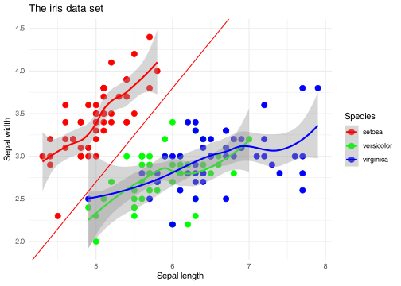
In this example you see why ggplot2 is so popular. The code is much cleaner and does not require you calling separate functions for each task. The parameters have explicit names, easy to remember. Legend and abline are directly connected to the plot, and the color scale is chosen with a single command, scale_color_viridis_d(). There is no need to separately change colors for the legend and the plot. The theme_minimal() function changes a whole range of parameters such as the font face used or the background color to achieve a “minimal look”.
scale_color_viridis_d(), theme_minimal()Noteworthy is also the labs() function, which allows you to change the labels of the axes and the title of the plot in one go (you can also use individual functions like xlab(), ylab() and ggtitle()).
labs(), xlab(), ylab(), ggtitle()However, some operations can be challenging. If you want your legend placed directly on top of the drawing in the right upper corner, you have to specify the coordinates manually. And if you want triangles… well, you still have to use the numbers, for example using geom_point(shape=2) for triangles6.
6 And here the punchline: I still have this piece of paper with symbols scrawled on it.
7 You basically have to calculate the LOESS lines manually and then manually plot them with lines() and / or polygon().
Then again, some complex operations are easy. For example, to add per-group LOESS lines to the plot with confidence intervals, you would simply add geom_smooth(method="loess"). In base R, the same operation requires about a dozen lines of code7.
5.3.3 Esthetics and information channels
The last point in the exercise was sneaky. The answer is: you would need to change the aes() function call. Rather than use color=Species, you would have to use shape=Species.
The aes() function – and the concept of plot esthetics – is at the core of ggplot2. The idea is that a plot has different information channels, such as x position, y position, color, shape, size, etc. Each of these can be mapped or linked to a column in the input data frame. This is the job of aes(). The geom functions such as geom_point() then use these mapping to actually draw the plot.
+------------+
Petal Width ------> | | -------> x position
Petal Length -----> | aes() | -------> y position
Species ----------> | | -------> color
+------------+This is why the layers (geom_point(), scale_color_viridis_d(), etc.) are being added to the plot using the + operator. Each layer adds another piece of information on how to display the plot. Then, the plot is displayed all in one go.
The assumption is also that this information is mapped automatically. You do not need (or should not need) to specify which precisely color which groups get, or which symbols are used for plotting. Rather, you chose a particular information channel (“use different shapes depending on species”) and ggplot2 takes care of the rest.
Of course, it is still possible to manually specify the colors, shapes etc. For example, and as you have seen in the previous exercise, you can use the same manual mapping of colors as above by using scale_color_manual(values=colors_map)8.
8 I do not really show here how to use the various scale_color_.... and scale_fill_... functions. There are so many use cases, and so many options, that it is hard to give a general overview. Use the google, Luke, or take a look at the R Graphics Cookbook.
5.3.4 Boxplots and violin plots
For continuous data, violin plots combined with boxplots or boxplots alone are the method of choice. In the following, we will use the sepal lengths of the iris dataset9. First, a boxplot. We have created a boxplot a while ago on day 2 using the R base function boxplot() (Section 2.4.3). Now we will do the same with ggplot2.
geom_boxplot()9 Not the doctored version we have been loading in the previous days, but the built-in original data set. If you have created an iris variable in your environment, type rm(iris) to remove it.
library(ggplot2)
ggplot(iris, aes(x=Species, y=Sepal.Length)) +
geom_boxplot()The thick line in the middle of the box is the median, the box itself goes from the lower quartile to the upper quartile (so its vertical size is the interquartile range), and the whiskers show the range of the data (excepting the outliers). The points shown are outliers. All in all, it is a non-parametric representation – that is, we do not assume that the data is normally distributed and we can use it for any kind of continuous data.
However, boxplots are still not perfect, as they do not show the actual distribution of the data. Here is a better method – we create a so-called violin plot which extrapolates a distribution from the data points. In addition, we overlay that with a boxplot to show the quartiles and outliers.
geom_violin()ggplot(iris, aes(x=Species, y=Sepal.Length)) +
geom_violin() +
geom_boxplot(width=0.1)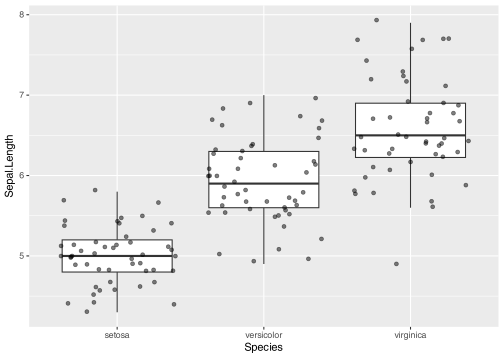
Finally, in cases where we do not have too many data points we might want to show them directly on the plot (we can combine it with a boxplot or a violin plot). Without loading any additional packages, you can use geom_jitter() to show the points:
ggplot(iris, aes(x=Species, y=Sepal.Length)) +
geom_boxplot(outlier.shape=NA) +
geom_jitter(alpha=.5)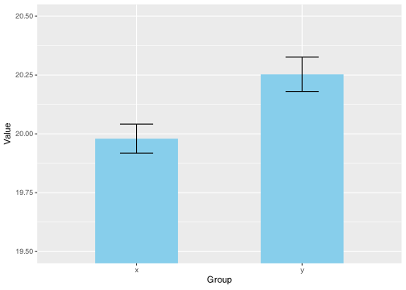
However, this is not the optimal way to show the data points, because it is hard to see the actual distribution. A particularly fine way of showing the actual points is implemented by the ggbeeswarm package and its geom_beeswarm() function.
geom_beeswarm(), ggbeeswarmlibrary(ggbeeswarm)
ggplot(iris, aes(x=Species, y=Sepal.Length)) +
geom_boxplot(outlier.shape=NA) +
geom_beeswarm(alpha=.5)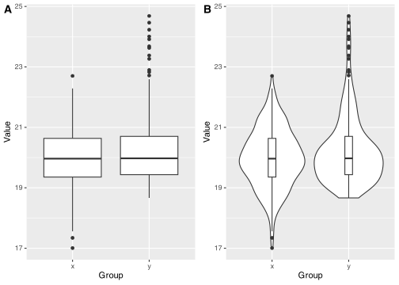
OK, but what if we want to show how the different variables (Sepal.Length, Sepal.Width, Petal.Length, Petal.Width) differ between the species? One possibility would be to produce four figures like the one above, one after another. But maybe we would like to have all box plots on one figure? Yes, that is totally doable!
First, however, we need to prepare a data frame which contains the values of all the variables in one column. We could use the pivot_longer() function from the tidyverse here, but I haven’t shown you this one yet, so if you would like to learn more about it, read the Appendix “Wide vs long data”. Instead, we will do it by hand.
pivot_longer()library(tidyverse)
df <- data.frame(species = rep(iris$Species, 4),
measurement = rep(c("Sepal.Length", "Sepal.Width",
"Petal.Length", "Petal.Width"), each=150),
value = c(iris$Sepal.Length, iris$Sepal.Width,
iris$Petal.Length, iris$Petal.Width)
)
dim(df)[1] 600 3Make sure that you understand what is happening above. We are creating a data frame which has three columns: species, measurement and value; in the value column, we first put all the sepal lengths, then the sepal width etc. The resulting data frame is therefore four times longer than the initial one (with \(4 \times 150 = 600\) rows), which is why we need to repeat the Species column four times10.
10 If you have followed the “recycling” part on day 1 closely, you might think that it is not necessary to use rep() here – and you are absolutely right! However, I urge you to do such operations explicitely until you are very comfortable with R, because it is easy to make mistakes with recycling otherwise.
One possible solution is to assign the measurement to the x position channel, and assign the species to another channel, for example the color:
ggplot(df, aes(x=measurement, y=value, color=species)) +
geom_boxplot()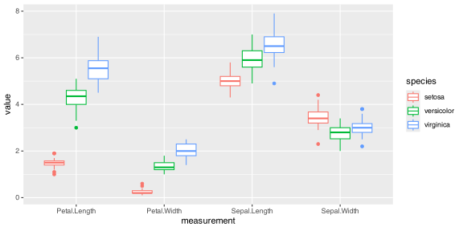
OK, that is already not bad. But now let me now to introduce you to the facet_wrap() function. You add it to the plot like another layer, but what it does is very clever: it separates the plot into subplots based on an additional variable – in this case, we use the measurement column.
facet_wrap()ggplot(df, aes(x=species, y=value)) +
geom_boxplot() +
facet_wrap("measurement", ncol=4, scales="free_y")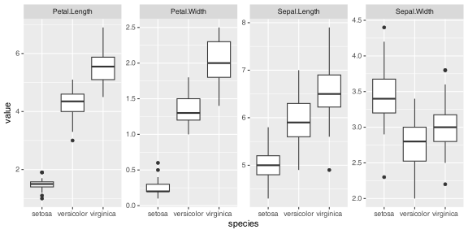
There is a lot one can do with facet_wrap() (and its cousin, facet_grid()). Here we see two additional parameters. The ncol parameter specifies the number of columns – setting it to two would generate a \(2 \times 2\) grid of subplots. The scales="free_y" parameter means that the y axis is not identical on all subplots – it makes sense here, because the different types of measurements are in different ranges; but in some other cases, you might want to omit it, or set the \(x\) scales to be free instead.
facet_grid()One more thing. You might be tempted to create a plot with the so-called bar plots. This might look something like this:
Bar plots

I am sure you have seen a plot like that many times, and that you might be tempted to recreate it. Don’t. This plot is a terrible way to show continuous data. Bar plots in general should only be used in very special cases, like when you show proportions or absolute counts (say, number of votes). In all other cases you should use a boxplot combined with a violin plot or actual data points. If you want to know more about this, check this section in the Appendix.
Show actual data
If possible, always strive to show the actual data points (with geom_beeswarm() or geom_jitter()) in addition to the summary statistics. If not, at least show the distribution (with geom_violin()). Never use a bar plot.
5.3.5 Heatmaps
A very common type of figure in high throughput data setting and one which is hard to achieve with other tools is the heatmap. There are numerous packages and functions (including the base R function heatmap()), however we will use the pheatmap() function from the pheatmap package.
pheatmap()First, however, we need some data. For starters, we take our beloved iris data set; however we will chose only 10 flowers from each species. You haven’t learned the following idiom yet, but here is how to do it efficiently in tidyverse:
library(tidyverse)
iris_sel <- iris |>
group_by(Species) |>
slice_sample(n=10) |>
ungroup()
table(iris_sel$Species)
setosa versicolor virginica
10 10 10 The group_by() function groups the data by the Species column, which means that the subsequent functions will affect each group separately. The slice_sample() is a specialized function only for this purpose – it randomly selects rows from a data frame. Finally we remove the grouping with the ungroup() function.
group_by(), slice_sample(), ungroup()library(pheatmap)
iris_mtx <- t(as.matrix(iris_sel[, 1:4]))
pheatmap(iris_mtx)
As you can see, we have first converted the first four columns of the matrix into a data frame, then transposed it (“flipped” so the rows become columns and vice versa) and finally plotted it with pheatmap().
pheatmap(),t()However, we do not see the species information on the plot. We can add it using a special data frame that contains the species information. We will also add a few more parameters to the pheatmap() function to make the plot more readable.
iris_species <- data.frame(species=iris_sel$Species)
foo <- pheatmap(iris_mtx, labels_col=iris_sel$Species,
color = colorRampPalette(c("blue", "white", "red"))(100)
)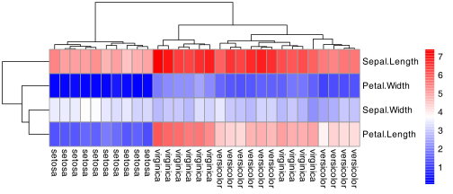
5.3.6 Output formats
We will not be spending time here on the details of how to create different output formats for plots; however, there is one thing that we want to mention.
In general, there are two types of graphical files: raster (bitmap) and vector graphics. Raster graphics are made of pixels, like photos, and are good for complex images. Vector graphics are made of lines and shapes, like drawings, and are good for plots.
The two graphics below look identical, however, in the HTML version of this book, the left one is a raster image, and the right one is a vector graphics.


Try magnifying these images – right click, select “open image in a new tab” (or similar) and then zoom in. You will see that the left image gets pixelated, while the right-hand one remains sharp:

The advantage of vector graphics is not only that you can zoom in as much as you want and the image will not get pixelated. First and foremost, you can edit them using an appropriate tool. Many people use the commercial Adobe Illustrator for this task, but there are also free and open source tools like Inkscape. Both these latter tools will do the job in a scientific setting – they will allow you to change the colors, the fonts, the line thickness, the text shown etc. of your plots.
Therefore, if possible, you should always save your plots in a vector format. You can always convert them to a raster format later, but once a plot is in a raster format, converting it to a vector format is practically impossible. The only exception is when you have an image with millions of data points – sometimes this may challenge your computer’s memory (vector graphics is more computationally intensive than raster graphics).
Vector graphics
If possible, use a vector graphic format for your plots. You can always convert them to a raster format later, while the opposite is not true.
R can produce vector graphics in the PDF and in the SVG format. Both formats can be edited in Inkscape or Illustrator, but the SVG format is also suitable for HTML pages, because SVG is a standard related to HTML – in fact, all the plots in this book are in SVG format.
To choose SVG or PDF format, you have the following options:
Use Rstudio. In the right hand “Plots” tab on the lower right panel, you can click on “Export” and choose one of the available formats, including PDF or SVG.
Using R markdown or Quarto. You can either use global document options or per-chunk options.
For global options, include the following code at the beginning of your R markdown file, just after the header:
```{r include=FALSE}
knitr::opts_chunk$set(dev="svg")
```Alternatively, insert this into the header:
knitr:
opts_chunk:
dev: svgIf you want to make sure that one specific chunk produces SVG, you can always set the option in the given chunk:
```{r dev="svg"}
plot(1:10)
```The only problem with this method is that if you create a Word document, the output will invariably be a raster image in your document.
Word and R plots
When you create a Word document with Rmarkdown, never copy your plots from that file! Either create a standalone file (see below for instructions or use the “Export” button in Rstudio), or copy the SVG graphics from the HTML file.
Directly creating graphics in your script. If you want your script to produce a file with the plot, you can do that in one of the many ways. Two of them are shown below, one using svg()11, and the other one using pdf() or cairo_pdf()12. Both commands need to be finalized with dev.off():
11 If you experience problems with SVG generated in R, you can try to use the svglite() function from the svglite package which produces a more standard-compliant SVG files.
12 The cairo_pdf() supports a wider range of characters, including Unicode characters, and allows font embedding. Long story short, use it if your fonts are garbled.
# producing an SVG image file
svg("test.svg", width=14, height=7)
plot(1:10)
dev.off()This produces an SVG file “test.svg” with the nominal size 14 x 7 inches (read more in the Appendix regarding image and font sizes).
# produce a PDF file
pdf("test.pdf", width=14, height=7)
plot(1:10)
dev.off()This produces a PDF file “test.pdf” with the nominal size 14 x 7 inches.
Vector graphics with Microsoft Office
If you rely heavily on Microsoft Office for your work, you might find another vector graphic format more useful – the Windows Meta File (WMF). The function is called win.metafile() and used in the same way as the pdf() function. The problems are that (a) you can only use it on Windows and (b) it does not support transparency.
Remember!
Use SVG format for your plots whenever possible.
5.4 Basic statistics with R
5.4.1 Statistics with R
R is a powerful tool for statistics. It has a staggering number of packages that can be used for statistical analysis. I would venture the guess that if someone somewhere came up with a statistical method, then there is an R package for it13.
13 Almost the same goes for bioinformatics and visualization.
One interesting fact about statistics is that is is way harder than programming in R. In fact, after some initial learning curve, you will find that it is much harder to understand, say, which statistical test you should use than how to actually run it in R. You will also see that it is harder to understand the plots that you have produced then to actually produce them.
Nonetheless, it takes a while to get into the “R mindset” of doing statistics. It is done very much differently than in UI-based software like Graphpad Prism or Excel.
5.4.2 Descriptive statistics
You have already seen some basic statiscs in R (see Day 1, for example Tip 1.1). Here is a quick reminder of how to get some basic statistics for a vector of numbers:
Descriptive statistics
x <- rnorm(1000)
# mean
mean(x)[1] -0.03872947# median
median(x)[1] -0.04420835# standard deviation
sd(x)[1] 1.048951# Some basic statistics in one go
summary(x) Min. 1st Qu. Median Mean 3rd Qu. Max.
-3.49291 -0.76969 -0.04421 -0.03873 0.68598 3.19717 For a vector of numbers, the summary() function returns a vector with six numbers. Four of them should be self-explanatory: the minimum, median, mean, and maximum. The other two are the first and the third quartile.
The first number is the 1st quartile, also called “the lower quartile” or 25th percentile, which means that 25% of the data are below that number. The second is the 75th percentile (or the upper quartile), which means that 75% of the data are below the number. Together, between the first and the second number, there are 50% of the data. You can check it for yourself:
Quartiles
s <- summary(x)
sum(x < s[2]) / length(x)[1] 0.25sum(x > s[5]) / length(x)[1] 0.25sum(x > s[2] & x < s[5]) / length(x)[1] 0.5Of particular interest is the so called interquartile range (IQR), which is the difference between the upper and lower quartile. Just like the median is a robust, non-parametric measure of the “center” of the data, the IQR is a robust, non-parametric measure of the “spread” of the data. While median corresponds to the parametric mean, IQR corresponds to the standard deviation.
Interquartile range
In non-normally distributed data, for example count data (when we count things) median and IQR are often more informative than mean and standard deviation. We will see that later when we come to visualizing data with bar plots.
You can get the IQR using the IQR() function:
IQR()IQR(x)[1] 1.45567For data frames, you can either use the summary() function or use the skim() function from the skimr package (see Section 3.3.1 and Section 3.3.2).
5.4.3 Simple tests
Most everyday statistical tests are available in base R without the need for loading any additional packages. Here we will show you some of them.
t-test. The Student’s test is one of the most common tests in all statistics. It compares two groups of data. In its simplest form, the function t.test() takes two vectors of numbers.
t.test()# simulate two vectors with different means
a <- rnorm(15, mean=1, sd=1)
b <- rnorm(15, mean=3, sd=1)
# perform the t-test
t.test(a, b)
Welch Two Sample t-test
data: a and b
t = -6.2053, df = 27.836, p-value = 1.082e-06
alternative hypothesis: true difference in means is not equal to 0
95 percent confidence interval:
-2.768422 -1.394013
sample estimates:
mean of x mean of y
0.9100471 2.9912649 The actual output of the t.test() function is a list with a lot of information, but when printed to the console it shows a human-readable summary.
It is often useful to extract and format the p-value from the output of the t.test() function. You can save the t.test output to a variable and then access the element p.value:
res <- t.test(a, b)
res$p.value[1] 1.082117e-06To show the p-value in a more readable format, you can use the format.pval function which converts the number to a string with the correct number of significant digits:
format.pval(..., digits=2)format.pval(res$p.value, digits=2)[1] "1.1e-06"This allows us to include the p-value in a sentence, for example like this:
"The p-value of the t-test
was `r format.pval(res$p.value, digits=2)`."This will be rendered as: “The p-value of the t-test was 1.1e-06.”
If we doo many tests or want to save the test results in a spreadsheet, it might be useful to use the tidy() function from the broom package.
tidy()library(broom)
tidy(res)# A tibble: 1 × 10
estimate estimate1 estimate2 statistic p.value parameter conf.low conf.high
<dbl> <dbl> <dbl> <dbl> <dbl> <dbl> <dbl> <dbl>
1 -2.08 0.910 2.99 -6.21 0.00000108 27.8 -2.77 -1.39
# ℹ 2 more variables: method <chr>, alternative <chr>The tidy() function returns a data frame with the test results. It understands many different statistical tests, not only the t-test.
Wilcoxon test. The Wilcoxon test is a non-parametric version of the t-test, and almost as powerful. Use it via wilcox.test():
wilcox.test()wilcox.test(a, b)
Wilcoxon rank sum exact test
data: a and b
W = 9, p-value = 1.251e-06
alternative hypothesis: true location shift is not equal to 0As you can see, the p-value is quite similar to the t-test, but we did not have to worry whether the data is normally distributed or not14.
14 The t-test assumes normality, while the Wilcoxon test does not. However, despite that, the t-test is quite robust to non-normality, which means that it will work quite well even if the data is not quite normally distributed.
Paired tests. Both the t-test and the Wilcoxon test can be used in a paired version. The paired variant is a special case of the regular t-test or Wilcoxon test where the two groups are not independent. For example, you might have measured the same individuals before and after a treatment. You are not allowed to use a regular test if the data is paired, because one of the most fundamental and important assumptions is not met – the assumption of independence. Also, in many cases, using a paired test will give you more statistical power, as we will see shortly.
Paired t-test with
paired=TRUEConsider this example. We first start with randomized vector a, then build vector b by adding a fixed effect and an error term:
boxplot()a <- rnorm(15, mean=1, sd=1)
b <- a + 0.5 + rnorm(15, mean=0, sd=.5)
boxplot(a, b)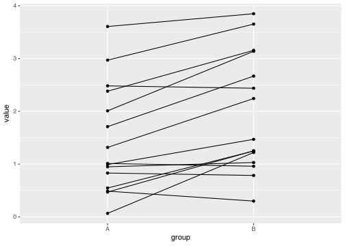
We see on the boxplot that the groups, if treated independently, are not really different. However, we can visualize it much better using a paired plot, in which a line is connecting the two values for each individual. We will use ggplot2 for that purpose:
df <- data.frame(value=c(a, b),
group=rep(c("A", "B"), each=15),
id=1:15)
ggplot(df, aes(x=group, y=value, group=id)) +
geom_point() +
geom_line()
The new parameter here is the group aesthetic, group, which tells ggplot2 that the points which have identical id belong together. The geoms, such as geom_line() which connects data points with lines, work group-by-group, and therefore lines connect only points within one group.
geom_line(), group aestheticOn this plot we can clearly see that for the majority of individuals, the value in the second measurement (group B) is higher than in the first measurement (group A). We can confirm this with a paired t-test:
t.test(a, b, paired=TRUE)
Paired t-test
data: a and b
t = -4.1849, df = 14, p-value = 0.0009172
alternative hypothesis: true mean difference is not equal to 0
95 percent confidence interval:
-0.7638627 -0.2461963
sample estimates:
mean difference
-0.5050295 The paired=TRUE argument tells R that the two vectors are paired. We get a p-value of 0.00092, whereas with regular t-test we would have gotten a p-value of 0.21. Similarly, if you were to run the Wilcoxon paired test, the p value would be 0.0034, whereas in the regular Wilcoxon test it would be 0.17.
\(\chi^2\) (Chi-square) test. If we have two categorical vectors, we can use the \(\chi^2\) test. Consider the results of the gene expression analysis we have looked at yesterday. We can define two vectors: “significant/non-significant” and “interferon/noninterferon”. These can be logical or character vectors, it doesn’t matter:
\(\chi^2\) test
library(tidyverse)
tr_res <- read_csv("Datasets/transcriptomics_results.csv")
tr_res <- select(tr_res,
Gene=GeneName, Description,
logFC=logFC.F.D1, FDR=qval.F.D1)
interferon <- grepl("interferon", tr_res$Description)
significant <- tr_res$FDR < 0.01
table(significant, interferon) interferon
significant FALSE TRUE
FALSE 40725 59
TRUE 834 21Above we constructed a contingency table. Rows show the two values of significant vector, columns – same for the interferon vector. In other words, most (40725) genes are neither significant nor interferons. However, out of 855 significant genes, as much as 21 have “interferon” in their description. And vice verse, out of the 80 interferon genes, more than a third are significant. But is this statistically significant? To answer this, we can use the chisq.test().
Contingency table with
table(x, y)chisq.test()chisq.test(significant, interferon)
Pearson's Chi-squared test with Yates' continuity correction
data: significant and interferon
X-squared = 221.44, df = 1, p-value < 2.2e-16Yep, looks like it. In fact, the above was a simple case of gene set enrichment analysis.
With this, we conclude this simple statistics part. If you are interested in more, take a look at the Appendix: more stats and visualizations – I have included a few quite common statistical applications there.
5.5 PCA and scatter plots
5.5.1 Principal component analysis
In this last section we will combine a lot of things (and introduce a few new concepts, despite it being Friday afternoon15).
15 Assuming, of course, that you started this course on a Monday…
One of the basic plots in statistics is the scatter plot, with two continuous variables. They are easy enough to generate in R, but we will do it with a twist, introducing you to a new statistical concept: principal component analysis (PCA).
PCA, Principal component analysis
Rember how we plotted the iris data set two days ago (Section 3.5.5)? It was easy to see the differences between the groups, and if we wanted, we could have plotted all four variables on two plots. But what if we had thousands of variables? For example, expression of thousands of genes for hundreds of samples?
One of the possible approaches is to use a technique like PCA. PCA converts the data replacing the original variables with a new, smaller set, that however covers all the variance in the data. While the old variables are clearly defined, the new ones, called “principal components”, result from combining them, so they do not correspond to something specific16. However, they have a few nice properties:
16 Components are the linear combinations of the original variables. So for a given sample, we basically add up expression of all genes, but each gene has a different weight.
- Most of the variance of the samples sits in the first components, then the next biggest share sits in the second etc. That means that by looking at the first few we are likely to get a very good idea of the overall differences in the data.
- The components are orthogonal, that is, they are not correlated with each other. This means that if, say, two groups correspond to one component, then it is quite likely that they will only correspond to that component. And thus we are able to say: “this component explains differences between treatments, and this explains gender”.
- The analysis is unsupervised, that is, we do not need to tell the algorithm which samples belong to which group. It will find the differences on its own (if there are any).
5.5.2 The data
In the following, we will be using a set of measurements of laboratory values (such as white blood cell count, hemoglobin, etc.) from a clinical vaccination study. There were three treatments - placebo and two vaccines, one with an adjuvant (Fluad) and one without (Agrippal), and samples were taken on different time points, starting with a screening time point and base line, then on to D0, D1 etc. The data is in the wide format, that is, each row corresponds to a single sample – that is, a single patient and a single time point, and each column corresponds to a single measurement.
library(tidyverse)
labdata <- read_csv("Datasets/labresults_wide.csv")
dim(labdata)[1] 1732 31head(labdata[,1:10])# A tibble: 6 × 10
SUBJ.TP ACA ALB ALP ALT BILI CA CREAT CRP GGT
<chr> <dbl> <dbl> <dbl> <dbl> <dbl> <dbl> <dbl> <dbl> <dbl>
1 4081.SCREEN 2.24 46.1 79.4 25.7 14.6 2.37 83.0 0.224 27.9
2 4081.BL 2.27 43.8 77.7 24.0 10.1 2.36 77.0 0.352 26.3
3 4081.D0 2.28 44.1 76.2 21.0 15.4 2.36 80.4 0.208 24.8
4 4081.D1 2.25 42.0 74.2 22.4 23.6 2.31 74.5 0.452 24.7
5 4081.D2 2.18 39.9 65.9 22.2 20.3 2.18 75.0 0.342 21.6
6 4081.D3 2.15 37.8 62.8 20.5 18.3 2.12 69.7 0.333 20.4The last line above uses head() to show the first few lines of the data frame, and with [,1:10] we limit the output to the first ten columns17.
17 If you want to know more on what the abbreviations mean, take a look at the labresults_full.csv file. This is the down-side of the wide format: no place to store extra information about the columns!
As you can see, the first column identifies the sample by giving both the subject and the time point. In the following, we only want one time point (D1), and we could filter the data set by combining filter() with a suitable grepl() call, for example, filter(labdata, grepl("D1$", TP)). Instead, we will use this as an opportunity to show you the separate() function.
separate()labdata <- labdata |>
separate(SUBJ.TP, into=c("SUBJ", "TP"), sep="\\.") |>
filter(TP == "D1")The separate() function takes a column name, the names of the new columns and a separator. The separator is a regular expression, and since the dot normally matches any character, we need to escape it with two backslashes. The resulting data frame has two columns named SUBJ and TP instead of one called SUBJ.TP, and we could directly filter the data frame for the desired time point.
There is one more thing that we need to take care of, unfortunately. There are some NA values in the data set, and we need to remove them. Rather than figure out how to handle them, we will simply remove all samples that have a missing value anywhere in the data set with one function:
drop_na()labdata <- labdata |> drop_na()The problem we are facing now is that the data set does not contain any interesting meta-data, like any information about the actual treatment group! Lucky for us, we have that information in another file. The expression_data_vaccination_example.xlsx file contains the meta-data (as well as matching RNA expression data, but we will not use that here for now).
We will combine both data sets using an inner join with merge().
# read the meta-data
library(readxl)
meta <- read_excel("Datasets/expression_data_vaccination_example.xlsx",
sheet="targets") |>
filter(Timepoint == "D1")
combined <- merge(meta, labdata, by="SUBJ")
head(combined[,1:10]) SUBJ USUBJID Batch ID Timepoint ARMCD ARM AGE SEX PLACEBO
1 4023 CRC987X-4023-17 C F4023.D1 D1 F FLUAD 22 F FALSE
2 4028 CRC987X-4028-120 C A4028.D1 D1 A AGRIPPAL 29 F FALSE
3 4034 CRC987X-4034-128 C A4034.D1 D1 A AGRIPPAL 17 M FALSE
4 4066 CRC987X-4066-222 A P4066.D1 D1 P PLACEBO 28 M TRUE
5 4119 CRC987X-4119-117 C F4119.D1 D1 F FLUAD 27 F FALSE
6 4122 CRC987X-4122-185 A P4122.D1 D1 P PLACEBO 26 F TRUEdim(combined)[1] 60 41
Check your results!
Check your results frequently. Do you get the number of rows you expect? How does the data look like? Use dim(), head(), tail(), summary(), View() all the time.
To run the PCA, we need, however, only the numeric columns. If you take a look at the combined data frame with, for example, View, you will see that we need the columns from ACA (adjusted calcium) to WBC (white blood cell count). We will select these columns and convert the resulting data frame to a matrix.
combined_mtx <- select(combined, ACA:WBC) |>
as.matrix()
head(combined_mtx[,1:5]) ACA ALB ALP ALT BILI
[1,] 2.049224 40.83864 72.74828 18.60445 9.781505
[2,] 2.124255 41.17438 61.13931 15.05414 6.878661
[3,] 2.203683 41.05199 56.41416 19.88788 11.611140
[4,] 2.160399 39.91228 40.65232 32.52709 12.058742
[5,] 2.100984 38.20202 69.14200 35.36937 9.516149
[6,] 2.198283 38.35306 81.23705 10.83461 8.1675155.5.3 Running the PCA
The PCA is a built-in function in R, and it is called prcomp(). We will only use a single parameter, scale. (mind the dot!) to tell PCA to scale the gene expression before working its magic:
prcomp()# the actual PCA is just one line!
pca <- prcomp(combined_mtx, scale.=TRUE)
is.list(pca)[1] TRUEnames(pca)[1] "sdev" "rotation" "center" "scale" "x" The object returned by prcomp() is a list, and the element that we are particularly interested in is called x. This is a matrix of the principal components, PC1, PC2 etc. There are quite a few principal components, and each one has as many elements as there are samples in the data set:
colnames(pca$x)[1:10] [1] "PC1" "PC2" "PC3" "PC4" "PC5" "PC6" "PC7" "PC8" "PC9" "PC10"dim(pca$x)[1] 60 30dim(combined)[1] 60 41As you can see, the number of rows of pca$x is the same as the number of samples in the combined data frame. In other words, for each sample, we have a bunch of new values that are the principal components.
We won’t be interested in more than the first few components, but we want to see them in connection with the covariates. Therefore, we will use cbind() to combine the combined data frame with the first few columns of the pca$x matrix. We will use the ggplot2 package to plot the data.
cbind()library(ggplot2)
pca_df <- cbind(combined, pca$x[,1:10])
ggplot(pca_df, aes(x=PC1, y=PC2, color=SEX)) +
geom_point(cex=3)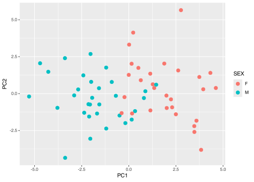
On the plot above, we have plotted the first two principal components, PC1 and PC2. You can clearly see that the first component separates the samples by sex: males have a different value of PC1 then females. We can see it clearly on a boxplot:
geom_boxplot()ggplot(pca_df, aes(x=SEX, y=PC1)) +
geom_boxplot(outlier.shape=NA) +
geom_jitter()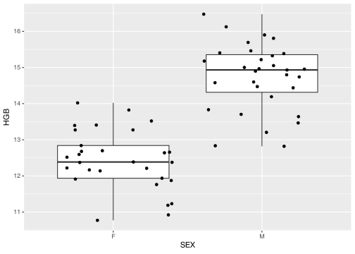
However, because geom_boxplot() also puts a dot where outliers are, we use outlier.shape=NA to suppress them.
geom_jitter()Exercise 5.8 (Vaccines) Repeat the plot above, but instead of SEX, use the ARM column which corresponds to the study arm, i.e. which vaccine (or placebo) was administered. Can you tell the groups apart? Try it with other components: PC3 vs PC4, PC5 vs PC6 etc. Any luck?
Solution
Yes, the PC4 seems to show differences between the three groups, with Fluad having the lowest values, and Placebo the highest.
ggplot(pca_df, aes(x=PC3, y=PC4, color=ARM)) +
geom_point(cex=3)
ggplot(pca_df, aes(x=ARM, y=PC4)) +
geom_boxplot(outlier.shape=NA) +
geom_beeswarm()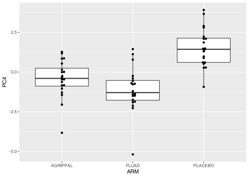
5.5.4 Interpreting the PCA
OK, but what does that mean? How does the PCA “know” who is male, and who is female? Where does this information come from?
As mentioned before, every principal component is derived from the actual values of the different variables. The values are summed up for each component, but not every variable contributes equally. We can wee how each value contributes to the component by directly looking at another member of the pca object, rotation. Again, it is a matrix, but now each row corresponds to a variable, and each column to a principal component:
head(pca$rotation[,1:5]) PC1 PC2 PC3 PC4 PC5
ACA -0.17887595 0.330789811 -0.12168346 0.08619332 -0.017461193
ALB -0.26645587 0.054470599 -0.18559187 -0.20262134 -0.061104850
ALP -0.08216838 0.139728838 0.06991512 -0.16908259 -0.006265994
ALT -0.12070502 -0.008253212 0.16125243 0.11857842 0.390570215
BILI -0.16847944 -0.233759742 -0.01457699 -0.26068360 -0.042323962
CA -0.26605009 0.280096277 -0.17364117 -0.02687325 -0.047787207These numbers are loadings, that is, the weights of each variable in the calculation of the given principal component. If the loading is close to 0, then the given variable does not contribute much to the component. If, however, it is very large, or very small (negative), then the variable contributes a lot.
To understand why the male samples are separated from the female samples on the plot above, we will focus on PC1 and sort it by the decreasing absolute loadings.
pc1 <- pca$rotation[,1]
ord <- order(abs(pc1), decreasing=TRUE)
head(pc1[ord]) HGB HCT RBC ALB CA CREAT
-0.3645930 -0.3362286 -0.3076459 -0.2664559 -0.2660501 -0.2550704 First value that we find is HGB with a value of -0.36. The fact that it is negative means that when the actual value of the variable is high, the resulting PC1 will be low and vice versa. That is, samples with a high value of this variable will be likely to be shown on the left side of the plot, and samples with a low value on the right side.
Now, male samples are on the left side of the plot, and female samples on the right side. What is HGB? It turns out that it corresponds to hemoglobin. Since the loading is low, it means that males should have a low value of hemoglobin compared to females. We can check it with a boxplot:

Indeed, that seems to be the case! And, of course, it makes perfect sense biologically.
The purpose of this exercise was not only to show you the mechanics of PCA. This is a useful method, and quite often it is worthwile to run it before you do anything else with the data. PCA shows you the possible groupings even before you even start to think about the actual analysis.
However, another point of this whole story was to demonstrate an important aspect of bioinformatic analyses. Think how much work it was to pummel the data into a shape which was suitable for the PCA, and how much work to actually figure out what it means – compared with the actual analysis, which was just a single line of code. This is a common situation in bioinformatics: the actual analysis is easy, but the data preparation and interpretation are hard and time consuming.
5.6 Afterword
5.6.1 Where to get R packages
There are three main sources of R packages: CRAN, Bioconductor and github.
CRAN is the resource you are using when using install.packages(). It features more than 20,000 packages from all possible areas of science, statistics and even entertainment. Packages in CRAN are rigorously tested for formal requirements: they must have a certain structure, all functions and data sets must be documented, and the package must pass a series of tests, including testing whether the packages can be installed on a variety of operating systems. However, the packages are never tested for their actual correctness, i.e. whether what they claim to do is what they actually do. There is no manual review process involved.
Here are a few packages on CRAN that might be of interest to you at this stage:
- colorDF) – a package that I wrote for displaying colorized data frames in the console. It has also a summary function that provides information similar to that of
skimr::skim()(colorDF::summary_colorDF()). - tinytable – package for generating awesome tables with R and R markdown.
- gt – another package for creating tables in R markdown; they can be really complex and have a professional look. Good for manuscripts and publications.
- tidylog – a package for logging your data manipulation steps; makes functions like
filter()more explicit. - colorout – adds colors to your console.
- formatdown – a bunch of functions to properly format numbers and more in Rmarkdown/Quarto, similar to the
format.pval()base R function but better looking (e.g. \(6.022 \times 10^{23}\)). - trackdown is an attempt to allow multi-user collaboration on R markdown documents. You work in R markdown / Quarto on your computer, but then upload a document to Google Docs, which is then edited by your collaborators; and then you can download the changes and apply them to your R markdown document automatically. Unfortunately, the hardest part is to set up the authentication with Google.
- renv – a package that helps you manage your R environment, including the packages you have installed. The idea is that rather than using a single global library on your computer, you install necessary packages into a local, project-specific library. This has the advantage that for a given project, you always work with the same versions of the packages, and helps to ensure reproducibility of your code.
- RColorBrewer – a very popular set of color palettes for R graphics. You can use them directly in
ggplot2by callingscale_fill_brewer()orscale_color_brewer().
Bioconductor is both a framework and repository for packages which are mostly related to bioinformatics and biomedicine. The framework differs somewhat from, say, tidyverse, so that at times you will run into problems; for example, the filter() function from tidyverse will not work on the DataFrame object from Bioconductor; and vice versa, loading a Bioconductor package may mask the filter() function from tidyverse with its own variant (that works in a different way), causing infuriating errors in your code.
Bioconductor packages are rigorously checked and manually reviewed, and thus provide a higher level of quality assurance than CRAN packages.
To install a Bioconductor package, you need to install the BiocManager package from CRAN, and then use the BiocManager::install() function to actually install your packages.
Github is a general repository for code, not only R but also many other languages. Anyone can create a repository on Github and publish their R package there. In fact, for many packages on CRAN or in Bioconductor there exists a Github repository that contains also development versions of the packages. Github is simply very convenient for developing software – and not only software. If you are reading this book, chances are that you are doing so over Github.
Installing github packages may depend on the specific package, but usually you can use the install_github() available when you load the devtools package. For example, to install the development version of colorDF, you can type devtools::install_github("january3/colorDF") (in this case, it is the same version as the one on CRAN).
There is no formalized check for the quality of the packages on Github. Individual developers may or may not include some QC, but there is no formal requirement for it. Therefore, the software quality may vary considerably.
5.6.2 Where to go from here
There are numerous resources for R on the web, allow me to recommend a few.
- StackOverflow – this is a general Q & A forum for programmers and other like them. Most of the questions you have someone has previously asked here, including many by yours truly.
- Online R books
- Hands-On Programming with R by Garrett Grolemund. A very different approach to teachin R to beginners than the one that I prefer, but maybe you will find it better. Worth checking in any case.
- R for Data Science (tidyverse) by Hadley Wickham. The tidyverse book, written by the main tidyverse developer. This book also starts with introducing R.
- R Graphics Cookbook by Winston Chang. The cookbook format splits the information in small “recipies” for common problems, both in base R and in ggplot2.
- R markdown: the definitive guide by Yihui Xie, J. J. Allaire and Garrett Grolemund. A comprehensive guide to R markdown written by the people who created it.
- R Workflow by Frank Harrell is somewhat hermetic, but there are many good ideas in it and a lot about reproducible scientific work with Quarto.
- R manuals from CRAN. Be
- warned – they tend to be rather comprehensive.
- Other books:
- The R Book by Michael J. Crawley – this is a magnificent book on statistics. It uses very conservative R language (no tidyverse at all), but it discusses at length even the more complex statistical issues. I recommend this book to every person willing to learn statistics with R.
- Computational Genomics with R by Altuna Akalin (available online) – this is a book on bioinformatics with R and BioConductor. It features both an introduction to genomics and a terse introduction to R. The R flavor presented is somewhat different from the one I prefer (for example, the author uses
=instead of<-), but the main focus of the book is elsewhere – on specific bioinformatics tasks. - Regression and other stories by Andrew Gelman, Jennifer Hill and Aki Vehtari. This book focuses on doing bayesian statistics with the RStan package. It is both, a very good introduction to R and a very good introduction to statistics, with thoughtful explanations and a lot of examples. However, keep in mind that the focus of the book is bayesian statistics.
- Large Language Models (LLMs): I have good experiences with LLMs (ChatGPT, Perplexity AI) for learning programming languages. While complex tasks may be out of reach for them, they are very good at explaining basics. “How do I do X in R?” or “Why doesn’t the following code work?” seem to work quite well. RStudio allows you also to use Copilot which is an LLM model that watches the code you write and tries to guess what you are trying to do. Just remember, that the one thing that LLMs don’t know how to say is “I don’t know”. If something doesn’t make sense, or if it is beyond the scope of their learning, they will “hallucinate” – give good sounding advice which is totally bonkers.
5.6.3 Famous last words
We are now at the end of Five Days of R, but your journey just started. Here is my last advice to you.
Get on with R
Start working with R, right now, for all your projects; for statistics, data management and even preparing reports and documents.
At first, doing the same task in R will take much more time then the same task in programs you used before. You will feel that you are wasting your time.
You are not. Sooner then you think, it will pay off.
5.7 Review
- R markdown / Quarto
- creating R markdown documents
- basic markdown formatting (bold, italic etc.)
- including R chunks
- creating output in different formats
- choosing an output format
- Visualisations
- basic scatterplots with
ggplot() - understanding esthetics (
aes()) - box plots with
geom_boxplot()and violin plots withgeom_violin() - heatmaps
- vector vs raster graphics
- basic scatterplots with
- Basic statistics
- t-test and Wilcoxon test
- paired tests
- \(\chi^2\) test
- principal component analysis with
prcomp()
- Running a principal component analysis